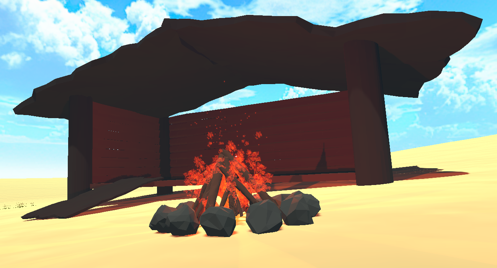

Projektet
I dette projekt arbejder vi med rekreativt forbrug, som i vores tilfælde handler om vores og brugerens behov for afkobling,
men gerne foruden denne slitage eller negativ virkning på det produkt hvor brugeren søger sin afkobling.
Vores nøgleproblem er ”Nedlukning og restriktioner grundet Corona giver stress”.
Det handler derfor for os om at udarbejde et produkt så vi slipper for alle de negative aspekter som kommer med stress.
Vi skaber her et produkt som er et VR-spil, hvis formål er at afstresse brugeren ved at tilfører dem dette virtuelle miljø som har en dejlig afslappende effekt.
Vi løser vores problem med et produkt som kan afslappe brugeren ved at hive dem ud af den virkelige verden og ind i verden uden anstrengelse og overbelastning,
her kan man gå en tur ved stranden, i skoven og man kan spille basket.

Vi har valgt at gå med et virtuelt miljø i VR som vores løsning til det problem omkring stress i Corona perioden.
I vores projekt og vores løsning vil vi fokusere på at skabe et roligt miljø med an god og afslappende atmosfære
og ud over dette er det også vigtig for os at det er indlevende og virkelighedstro.